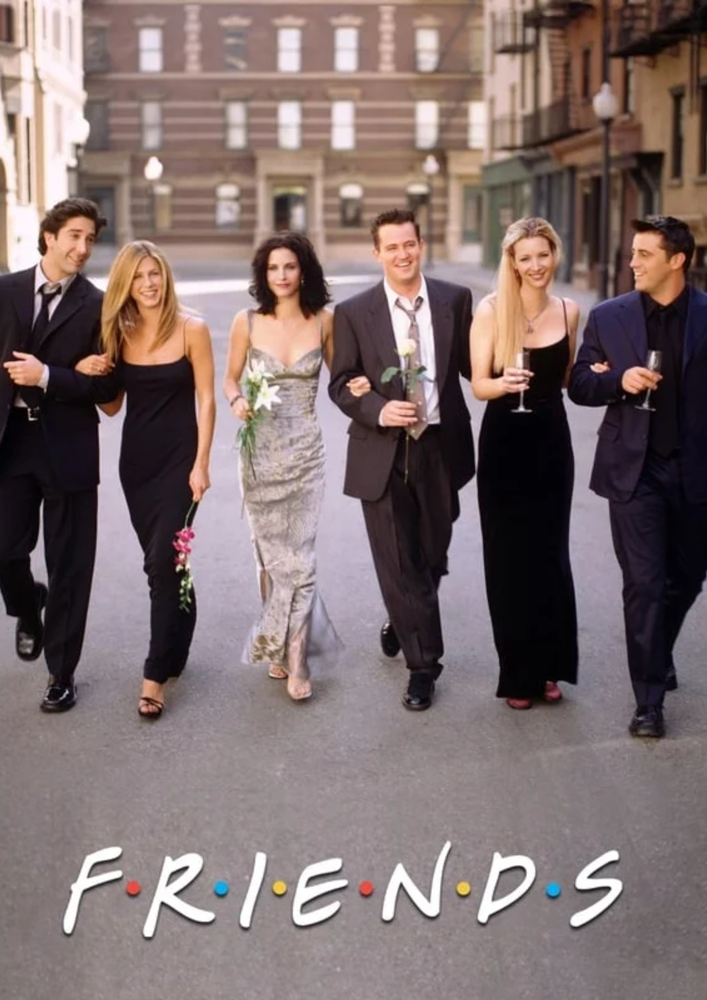
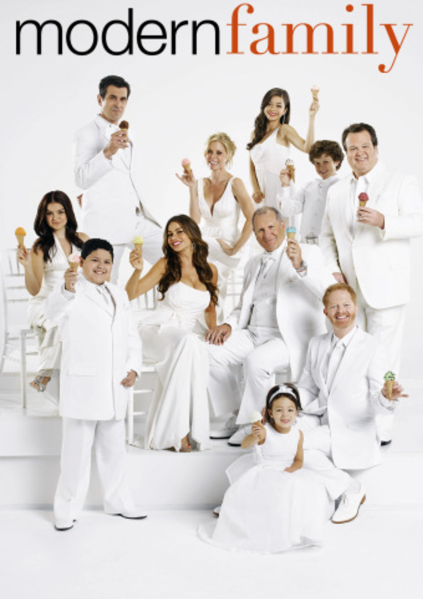
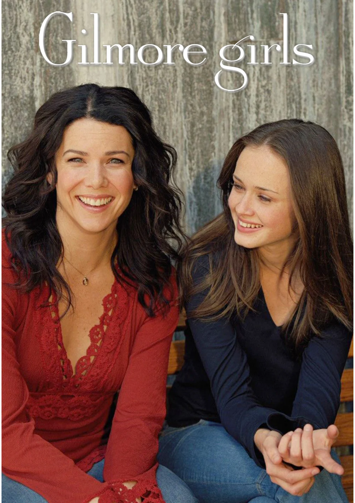
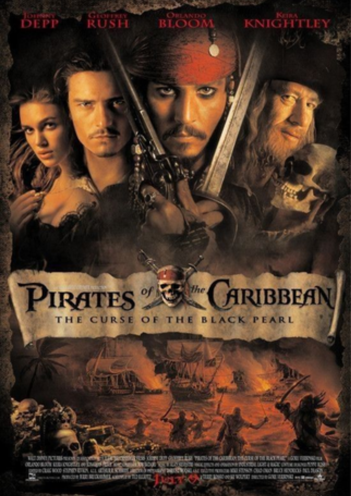

| 
| Seis jovens são unidos por laços familiares, românticos e, principalmente, de amizade, enquanto tentam vingar em Nova York. Rachel é a garota mimada que deixa o noivo no altar para viver com a amiga dos tempos de escola Monica, sistemática e apaixonada pela culinária. Monica é irmã de Ross, um paleontólogo que é abandonado pela esposa, que descobriu ser lésbica. Do outro lado do corredor do apartamento de Monica e Rachel, moram Joey, um ator frustrado, e Chandler, de profissão misteriosa. A turma é completa pela exótica Phoebe. |
|  |
Modern Family gira em torno da vida de uma família, os Pritchett, dividida em três núcleos: 1) o patriarca Jay , sua esposa colombiana Gloria Delgado, o enteado Manny e o pequeno Joe; 2) sua filha Claire, o marido Phil Dunphy e seus três filhos, Haley, Alex e Luke; e 3) o filho Mitchell, seu marido Cameron Tucker e sua filha adotiva Lily. Ambientada na Califórnia, onde todos os personagens moram perto uns dos outros, a série trata de diversas situações engraçadas do dia a dia de cada um, além de conduzir, com extrema leveza, temas considerados polêmicos em qualquer família tradicional. |
|  |
Lorelai Gilmore (Lauren Graham) tem uma relação tão amigável com sua filha, Rory (Alexis Bledel), que muitas vezes elas são confundidas como irmãs. Entre o relacionamento de Lorelai com seus pais, a nova escola preparatória de Rory, e os romances nas vidas das duas, há muito drama e muita diversão acontecendo. |
|  |
O pirata Jack Sparrow tem seu navio saqueado e roubado pelo capitão Barbossa e sua tripulação. Com o navio de Sparrow, Barbossa invade a cidade de Port Royal, levando consigo Elizabeth Swann, filha do governador. Para recuperar sua embarcação, Sparrow recebe a ajuda de Will Turner, um grande amigo de Elizabeth. Eles desbravam os mares em direção à misteriosa Ilha da Morte, tentando impedir que os piratas-esqueleto derramem o sangue de Elizabeth para desfazer a maldição que os assola. |
.png) |
Quando os mongóis invadem a China, o imperador (Pat Morita) decreta que cada família ceda um homem para o exército imperial. Com isso, uma jovem fica angustiada ao ver seu velho e doente pai ser convocado, por ser o único homem da família. Ele precisa ir, mesmo sabendo que certamente morrerá, para manter a honra da família. Assim, sua filha rouba sua armadura e espada, se disfarça de homem e se apresenta no lugar do pai, mas os espíritos dos ancestrais decidem protegê-la e ordenam a um dragão (Eddie Murphy), que havia caído em desgraça, que convença a jovem a abandonar seu plano. Ele concorda, mas quando conhece a jovem descobre que ela não pode ter dissuadida e, assim, decide ajudá-la a cumprir sua perigosa missão de ir para a guerra e voltar viva.
|